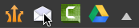

Email a capture
Email a capture
The Email output embeds the selected image capture in a new email message in your default mail client (Mail, Microsoft Entourage, or Microsoft Outlook). The Email output is not available for video captures.
The Email output embeds the selected image capture in a new email message in your default mail client (Mail, Microsoft Entourage, or Microsoft Outlook). The Email output is not available for video captures.
Click the Email output button or select Share > Email.

Snagit inserts the selected capture on the tray into a new email message in your default mail client. Snagit supports Mail, Microsoft Entourage, and Microsoft Outlook.